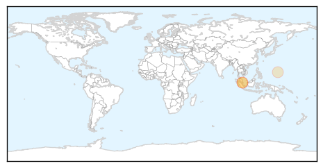
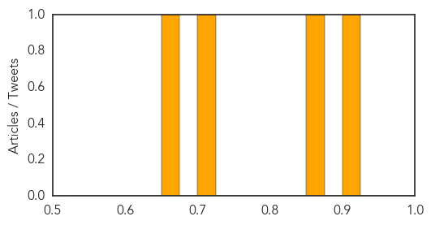
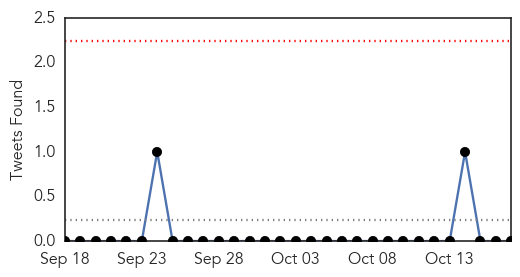

Hepatitis
30-Day Web Trend
4 alerts, 1 warnings
30-Day Twitter Trend
0 alerts, 0 warnings

Article Locations
Article Confidences
Top Articles:
- 0.914
- No new hepatitis C cases as 441 patients test negative, news, Health News, AsiaOne YourHealth
- 0.863
- SGH hepatitis C outbreak: Health ministry to invite international experts to advise review committee, Health News & Top Stories
- 0.720
- International experts to advise review committee, news, Health News, AsiaOne YourHealth
- 0.664
- WHO conference wraps up
Top Tweets:
-
No tweets found for Oct 17, 2015
Influenza
30-Day Web Trend
7 alerts, 4 warnings

30-Day Twitter Trend
0 alerts, 0 warnings

Article Locations

Article Confidences

Top Articles:
- 0.964
- Flu shots available at pharmacies
- 0.958
- 'Flu jab campaign kicks off and can prevent 45% of hospital admissions
- 0.928
- Un-vaccinated healthcare workers risk patients’ lives: DAK
- 0.843
- Today's stories from newspapers in Parry Sound
- 0.800
- Today's stories from newspapers in Ottawa
- 0.800
- Today's stories from newspapers in Ottawa
- 0.787
- Today's stories from newspapers in Orangeville
- 0.751
- October 17, 2015 Archives
- 0.751
- October 16, 2015 Archives
- 0.751
- October 16, 2015 Archives
- 0.724
- FluMist shortage leads to push for flu shots in some areas
Top Tweets:
-
No tweets found for Oct 17, 2015